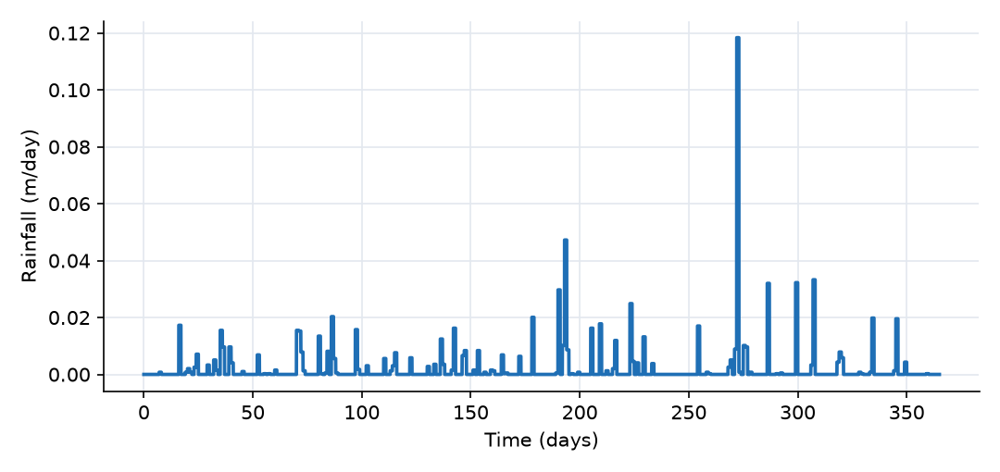
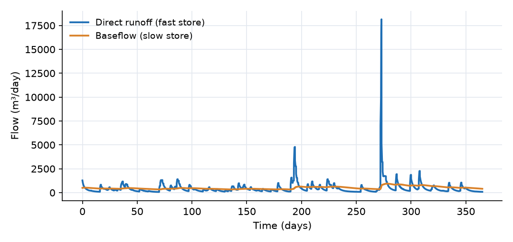
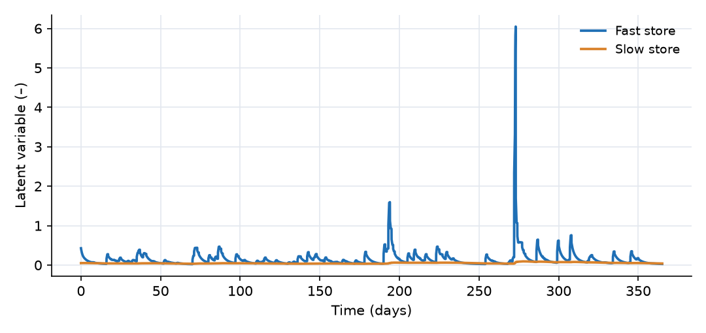
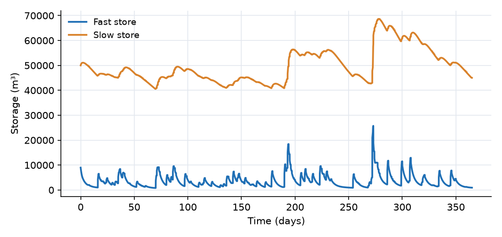

What this model represents
Data-driven streamflow models (neural networks and other regressions) can fit hydrographs well but are free to create or destroy water. Conceptual models conserve water but fix the shape of every storage–discharge relation in advance. The physicsbaseddatadrivenhydrology plugin sits between the two. It provides generic storage units, each with a latent variable (a generalized potential computed from its storage), and one kind of link that moves water from higher to lower potential. Any network of these units conserves mass exactly, and the shapes of the potentials and the link conductances are parameters to be learned from rainfall and streamflow records. This is the sense in which the approach is "physics-informed": mass balance and down-gradient flow are imposed, and the rest is fitted.
This example builds the smallest useful network for a 1 km² catchment: a fast store and a slow store that both drain to an outlet. It is driven by one year of measured daily rainfall (2010, Baltimore/Washington International Airport, Maryland). Its parameters were set by hand to give a plausible humid-region hydrograph. There is no observed streamflow in this example, so the model is not trained; it shows what the building blocks compute and how the network behaves, as a starting point for calibration.
How it works
Links. Every link computes
Q = T · (φ_from − φ_to)
where T is the link's Mean_Transmissivity and φ the latent variables of the two ends. Flow is positive from from to to and reverses when the potential difference does. Here φ is dimensionless and T has units of m³/day per unit potential. (The plugin labels T as m²/day, which matches only if φ is a length such as a head.)
Fast store (Storage Unit). With storage S, capacity C and fill ratio r = S/C, its latent variable is
φ = s · r/(1 − r) − 0.0001/r
with scale factor s = 1. The first term rises without bound as the store approaches its capacity, so outflow grows as fast as needed and the store never overfills: a smooth form of saturation-excess behavior. The second term goes to −∞ as the store empties, so links reverse and refill it before it can go dry. Rainfall enters directly:
dS/dt = c_P · P(t) − Σ Q_out
where P is the rainfall rate in rainfall.csv (m/day) and c_P the Precipitation_coefficient. Here c_P = 400,000 m²: 40% of the 1 km² catchment. The plugin has no evapotranspiration, so c_P acts both as the unit conversion from depth to volume and as an effective-rainfall factor that absorbs all losses (mainly evapotranspiration). In a calibration it would be one of the fitted parameters.
Slow store (Storage Unit (Power-law)). Its latent variable is
φ = a · S^b
with a = 2×10⁻¹¹ and b = 2. Draining to an outlet at φ = 0 through a link of transmissivity T, it is a nonlinear reservoir Q = T·a·S^b. With b = 2 the recession is fast at high storage and slows as the store empties. At the initial 50,000 m³, baseflow is 500 m³/day and the local recession rate dQ/dS is 0.02 1/day (a 50-day time scale). With b = 1 it would be a linear reservoir.
Outlet (Fixed Latent Variable Unit). Its latent variable is fixed (0 here) and it accepts any amount of water, like a fixed-head boundary.
Network. Rainfall → Soil_store → (Direct_runoff) → Stream, and Soil_store → (Percolation) → Groundwater_store → (Baseflow) → Stream. Because percolation is driven by φ_soil − φ_gw, it reverses whenever the fast store is drier, in potential terms, than the slow store: a simple representation of capillary rise or exchange in both directions.
Time stepping. The rainfall is an ordinary time series, not a precipitation source, so the setting timestep_clamp_series = All time series is used to make the solver stop at every change in rainfall. With the default (precipitation sources only) the solver can step across the start or end of a rain day and the rain actually applied differs from the record by about 1.5%.
What to look for in the results
- Two time scales. Direct runoff rises within hours of rain and falls back within a few days. Baseflow changes over weeks. Between storms, flow is 400 to 1500 m³/day; on 30 September (118 mm of rain) it peaks at 18,800 m³/day.
- Saturation behavior. The fast store reaches 85% of capacity in the September storm. Because its potential grows as r/(1 − r), its outflows (direct runoff and percolation) jump by an order of magnitude when it is nearly full, and stay small otherwise.
- Reversal. For 13% of the year the fast store's potential is below the slow store's, and percolation runs upward (1,600 m³ in total, compared with 179,000 m³ downward).
- Seasonality from storage. Monthly baseflow is lowest in May and June (11 mm) and highest in October (25 mm) after the September storms refill the slow store.
- Water balance. Effective rainfall is 345,200 m³ (40% of 863 mm over 1 km²). Streamflow is 358,200 m³ (174,000 m³ direct runoff, 184,000 m³ baseflow); the stores lost 13,000 m³ over the year. The residual is about 30 m³ (0.01%).
Assumptions and limitations
- The model is not calibrated. The parameters (capacity, scale factor, power-law coefficient and exponent, three transmissivities, precipitation coefficient and initial storages) are illustrative. In practice they are estimated from a rainfall–streamflow record with the calibration tools (see the Calibration and Uncertainty track).
- There is no evapotranspiration. All losses are folded into a constant precipitation coefficient, so the model cannot represent seasonal changes in the runoff ratio caused by evaporation.
- The latent variables are abstract potentials, not measurable heads. Only their differences matter, and only together with the transmissivities.
- The plugin's unit labels are not consistent with this usage: transmissivity is labeled m²/day, and the power-law store's storage is labeled in m while it is used here as a volume in m³. The numbers in this model are consistent among themselves (m³ and m³/day throughout).
- Daily rainfall is applied uniformly through each day, so sub-daily peaks are smoothed.
Model diagram
Hover a block or link to see its name and type. Arrows show the positive flow direction.
Components
Click a component to see every property set in the model file, with units and meaning.
Blocks 3
Storage compartments: each holds water (and dissolved or particulate mass) and has a state that evolves in time.
Soil_storeStorage Unit · physicsbaseddatadrivenhydrologyFast store (Storage Unit) with a capacity of 30,000 m³ (30 mm over 1 km²), starting 30% full. Receives the effective rainfall. Its latent variable rises steeply as it fills, so it sheds water quickly in wet periods.
Storage Unit) with a capacity of 30,000 m³ (30 mm over 1 km²), starting 30% full. Receives the effective rainfall. Its latent variable rises steeply as it fills, so it sheds water quickly in wet periods.Storage Unit: Storage Unit
| Property | Value | Unit | Meaning |
|---|---|---|---|
| Capacity | 30000 | m3 | |
| Initial storage ratio | 0.3 | ||
| Precipitation | rainfall.csv | ||
| Precipitation coefficient | 400000 | ||
| Scale factor | 1 |
Groundwater_storeStorage Unit (Power-law) · physicsbaseddatadrivenhydrologySlow store (Storage Unit (Power-law)) starting at 50,000 m³. Its latent variable is 2×10⁻¹¹·S², a quadratic function of storage, so it drains as a nonlinear reservoir.
Storage Unit (Power-law)) starting at 50,000 m³. Its latent variable is 2×10⁻¹¹·S², a quadratic function of storage, so it drains as a nonlinear reservoir.Storage Unit (Power-law): Storage Unit
| Property | Value | Unit | Meaning |
|---|---|---|---|
| Initial Storage | 50000 | m | |
| Coefficient | 2e-11 | ||
| Exponent | 2 | ||
| Precipitation coefficient | 0 |
StreamFixed Latent Variable Unit · physicsbaseddatadrivenhydrologyOutlet (Fixed Latent Variable Unit) with its latent variable fixed at 0. Its storage starts at zero and accumulates all streamflow.
Fixed Latent Variable Unit) with its latent variable fixed at 0. Its storage starts at zero and accumulates all streamflow.Fixed Latent Variable Unit: Fixed Latent Variable Unit
| Property | Value | Unit | Meaning |
|---|---|---|---|
| Latent variable | 0 | ||
| Initial Storage | 0 |
Links 3
Connections that move water (and the mass it carries) between blocks.
Direct_runoffstorage_unit_link · physicsbaseddatadrivenhydrologyLink from the fast store to the stream, transmissivity 3000. Carries the quick response to rain.
storage_unit_link: Storage Unit Link
| Property | Value | Unit | Meaning |
|---|---|---|---|
| Mean Transmissivity | 3000 | m2/day |
Percolationstorage_unit_link · physicsbaseddatadrivenhydrologyLink from the fast store to the slow store, transmissivity 4500. Normally downward; it reverses when the slow store has the higher latent variable.
storage_unit_link: Storage Unit Link
| Property | Value | Unit | Meaning |
|---|---|---|---|
| Mean Transmissivity | 4500 | m2/day |
Baseflowstorage_unit_link · physicsbaseddatadrivenhydrologyLink from the slow store to the stream, transmissivity 10,000. Carries the slow, sustained flow.
storage_unit_link: Storage Unit Link
| Property | Value | Unit | Meaning |
|---|---|---|---|
| Mean Transmissivity | 10000 | m2/day |
Input files
rainfall.csv | Daily rainfall (m/day) versus time (days from 1 January 2010) for 2010, aggregated from NOAA hourly precipitation at Baltimore/Washington International Airport (BWI), Maryland (US public domain). Each day is written as a step (two points, at the start and just before the end of the day). Two columns, no header. Total 863 mm. |
Simulation settings
| Start time | 0 |
| End time | 365 |
| Initial time step | 0.01 |
| Write interval (steps) | 10 |
Results
Produced by running the downloaded model unchanged.



